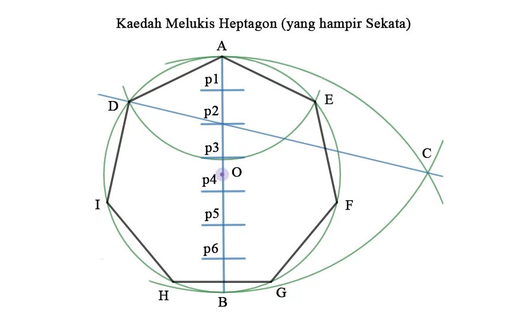
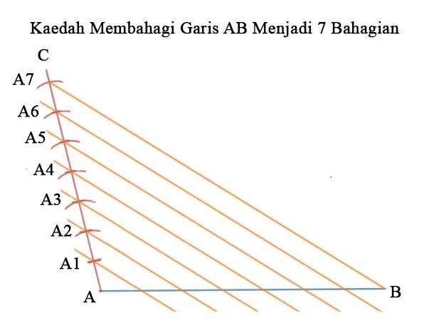
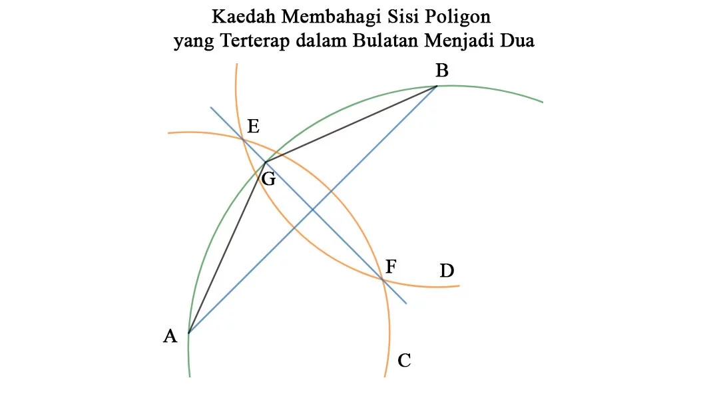
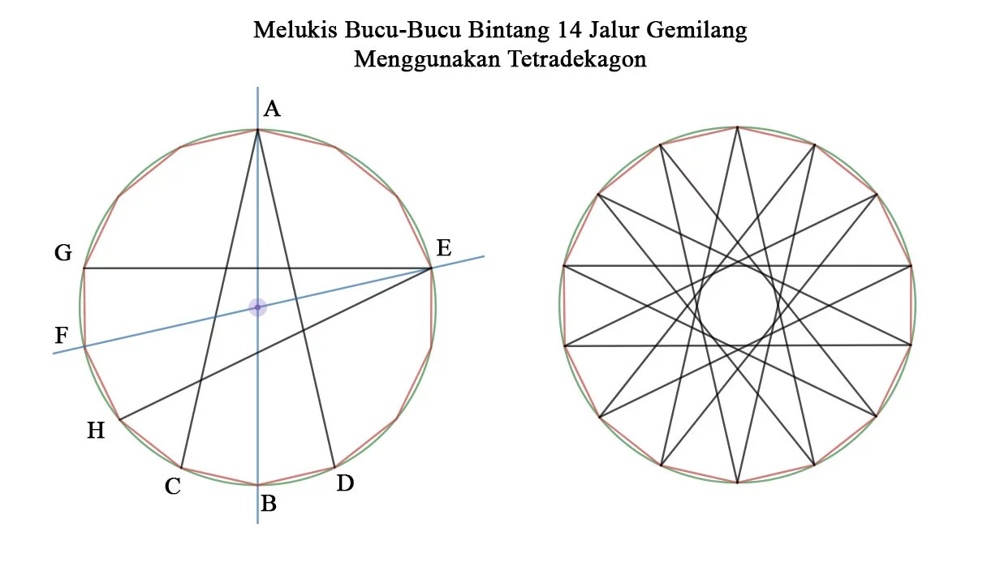

Setiap kali terpandangkan Jalur Gemilang berkibaran di sana-sini, pasti timbul rasa debaran semangat menggerakkan kita berusaha sehabis baik. Lirik lagu Jalur Gemilang terngiang-ngiang di telinga seolah-olah bendera itu hidup lalu menyuntik semangat kewarganegaraan ke dalam roh kita. Ia membuatkan kita rasa seolah-olah boleh mencapai apa sahaja.
Namun, jika kita diberi tugasan melukis bendera Jalur Gemilang, semangat tadi luntur kehilangan warna. Semangat kita hilang bukan sebab kita tidak sayangkan bendera kita, tetapi kita tidak mahu mencacatkan bendera kesayangan kita. Kita tiada masalah melukis jalurnya, mahupun bulan sabitnya. Yang menjadi masalahnya ialah bintang 14 bucunya yang selalu membuat ramai rasa ingin menangis setiap kali melukisnya.
Aku mengangguk tanda faham. Aku pun selalu memikirkan tentang bagaimana ingin melukis bintang 14 bucu yang cantik. Pemikiran aku membawa kepada poligon 14 sisi, iaitu tetradekagon. Jika kita mampu bina tetradekagon yang sekata, pasti bintang 14 bucu kita pun cantik!
Dalam mata pelajaran Lukisan Kejuruteraan sewaktu tingkatan 4 dan 5, ada satu kaedah untuk melukis poligon 5 sisi sekata, pentagon, yang terterap dalam satu bulatan yang diberi. Aku dapati kaedah ini juga boleh digunakan untuk beberapa poligon lain. Maka, adakah kaedah ini boleh digunakan untuk semua poligon?
Ya, ia boleh dilakukan, tapi hanya penghampiran sahaja. Maknanya, apa sahaja poligon sekata boleh dilukis tetapi akan ada sekurang-kurangnya satu sisi yang pendek sedikit berbanding yang lain. Aku dapati kaedah ini tidak sesuai untuk tetradekagon kerana kecacatan yang ketara tetapi agak sekata untuk poligon 7 sisi, heptagon. Maka, menggunakan kaedah ini kita akan bina heptagon dahulu. Memandangkan 14 adalah 2 kali 7, maka mengubah heptagon kepada tetradekagon hanya memerlukan pembahagian dua setiap sisi.
=Untuk melukis bintang 14 bucu jalur gemilang, aku gariskan 3 langkah: 1) Lukis Heptagon; 2) Ubah Heptagon menjadi Tetradekagon; 3) Sambungkan titik-titik tetradekagon untuk menjadikannya bintang. Dah sediakan pembaris dan jangka lukis? Mari kita lihat bagaimana melukisnya.
1) Melukis Heptagon daripada bulatan.

Rajah 1. Kaedah melukis Heptagon daripada bulatan yang diberi. Katakan bulatan berpusat pada O dan berjejari OA telah disediakan. Kini kita ingin melukis sebuah heptagon yang terterap di dalam bulatan tersebut.
Lukis garis AB merentasi O yang panjangnya adalah diameter bulatan. Berpusatkan B, lukis lengkuk berjejari BA ke sebelah kanan rajah. Begitu juga, berpusatkan A, lukis lengkuk berjejari AB ke sebelah kanan rajah. Kedua-dua lengkuk akan bertemu pada titik C. Disebabkan kita ingin melukis heptagon, bahagikan garis AB kepada 7 bahagian. Hal ini bergantung kepada poligon yang ingin dibina. Garis AB perlu dibahagikan kepada berapa banyak sisi poligon tersebut. Cara membahagikan garisan akan aku sertakan sebentar lagi. Hubungkan titik C dengan p2 lalu dipanjangkan sehingga bertemu bulatan pada D. Hal ini tidak bergantung kepada poligon. Setiap poligon yang ingin dibina akan menghubungkan titik C dengan p2. Hubungkan A dengan D membentuk garis AD. Garis AD ini ialah panjang sisi heptagon kita. Pindahkan panjang ini sepanjang ukurlilit bulatan menggunakan jangka lukis. Namun harus diingatkan, satu sisi adalah lebih pendek berbanding yang lain! Aku memberikan kecacatan itu pada garis HG dengan memindahkan panjang secara simetri kiri dan kanan.
Selingan: Membahagi garis AB kepada 7 bahagian.

Rajah 2 Kaedah membahagi garis AB menjadi 7 bahagian sekata. Katakan garis AB telah diberikan. Kita ingin memotong garis AB menjadi 7 bahagian dengan sekata.
- Lukis garis AC pada mana-mana arah.
- Tandakan sembarangan titik A1 pada garis AC.
- Pindahkan jarak AA1 sepanjang garis AC sehingga mempunyai 7 senggat.
- Hubungkan senggat paling hujung, iaitu A7 untuk kes ini, dengan B membentuk garis A7B.
- Lukis garis dari setiap senggat lain memotong garis AB. Garis-garis ini adalah selari dengan garis A7B.
Kini, garis AB sudah dibahagikan menjadi 7 bahagian sekata. Garis AB boleh dibahagikan menjadi seberapa banyak bahagian yang diingini dengan sekata. Jika inginkan 10 bahagian, lakukan langkah 3 sehingga ada 10 senggat. Begitu juga dengan nilai pembahagian yang lain.
2) Mengubah Heptagon Menjadi Tetradekagon

Rajah 3 Kaedah membahagi garis AB yang terterap dalam bulatan menjadi dua lagi garis yang terterap dalam bulatan. Katakan sisi AB yang terterap dalam bulatan telah diberikan. Kita ingin membahagi sisi ini menjadi dua sisi sama panjang yang juga terterap dalam bulatan yang sama.
Menggunakan jangka lukis, lukis dua lengkuk berjejari lebih daripada separuh AB. Lengkuk pertama ialah lengkuk C berpusatkan A. Lengkuk kedua ialah lengkuk D berpusatkan B. Lengkuk C dan D mesti mempunyai jejari yang sama. Kedua-dua lengkuk itu akan bertemu pada dua titik, iaitu E dan F. Lukis garis EF. Garis EF akan bertemu bulatan pada G. Titik G ialah bucu baru poligon kita. Lukis AG dan GB. Kini kita sudah bahagikan sisi AB menjadi AG dan GB yang ketiga-tiga sisi tersebut terterap dalam bulatan yang sama. Ulangi langkah ini untuk kesemua sisi heptagon kita. Disebabkan setiap sisi sudah menjadi dua kali ganda lebih banyak, heptagon kita sudah menjadi tetradekagon.
3) Menyambung Titik-Titik Tetradekagon menjadi Bintang 14 Jalur Gemilang

Rajah 4 Kaedah menyambung titik-titik pada tetradekagon agar menjadi bintang Jalur Gemilang. Katakan suatu tetradekagon sekata sudah diberikan, lalu bagaimana kita ingin melukis bintang Jalur Gemilang daripadanya? Kita tidak boleh menyambung dua titik sesuka hati kerana bintang Jalur Gemilang mempunyai corak yang sangat khusus. Setelah merenung bintang itu buat masa yang lama, aku dapat kenal pasti corak pembinaannya.
Ambil suatu titik, katakan A, lalu kenalpasti titik setentangnya. Titik setentang A ialah B. Jangan sambungkannya dengan B, tetapi sambungkan A kepada jiran-jiran B iaitu C dan D. Kini kita ada garis CA dan AD. Sebagai contoh tambahan, titik E bersetentang dengan titik F tetapi E disambungkan dengan jiran-jiran F iaitu G dan H. Ulang kaedah ini untuk setiap bucu tetradekagon. Lalu, kita sudah ada bintang Jalur Gemilang yang cantik dan sekata.
Akan tetapi, ia tidak betul-betul sama. Jika ditindih di atas Bintang Jalur Gemilang, kita boleh nampak ada bahagian yang tidak selari. Hal ini berlaku kerana poligon yang dibina itu tidak betul-betul sekata. Sebenarnya, ada kaedah melukis heptagon atau tetradekagon yang lebih sekata, tetapi kaedah ini mudah dan boleh digunakan untuk poligon-poligon lain. Walaubagaimanapun, kaedah ini cukup sekata untuk membina bintang Jalur Gemilang yang disayangi rakyat dengan cantik. Kalau kalian tahu kaedah melukis heptagon atau tetradekagon yang lain yang lebih tepat, dipersilakanlah menggunakan kaedah itu.

Rajah 5. Bintang Jalur Gemilang yang ditindih oleh bintang yang dilukis. Didapati ada sedikit perbezaan yang tidak ketara.